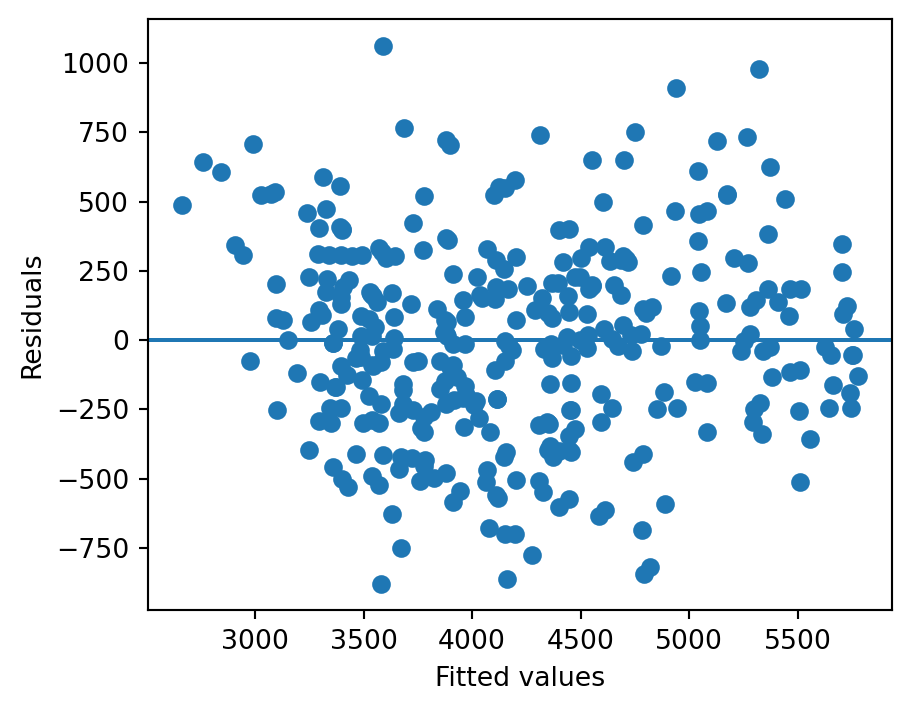

SciPy and Statsmodels are complementary Python libraries widely used for statistical analysis, but they serve different purposes within the analytical workflow.
SciPy (scipy.stats) provides core statistical functionality, including probability distributions, summary statistics, and classical hypothesis tests such as t-tests, chi-square tests, and ANOVA. It is typically used for standalone inferential procedures.
Statsmodels is designed for statistical modeling and inference. It offers a unified framework for estimating regression models, conducting hypothesis tests within models, and performing diagnostic checks, with a formula interface similar to R.
Practical distinction: Use SciPy when the goal is to perform individual hypothesis tests. Use Statsmodels when the objective is to model relationships among variables and obtain detailed inferential output.
Load data:
import numpy as npimport pandas as pdpenguins = pd.read_csv("data/penguins.csv").dropna()penguins.head()
species
island
bill_length_mm
bill_depth_mm
flipper_length_mm
body_mass_g
sex
year
0
Adelie
Torgersen
39.1
18.7
181.0
3750.0
male
2007
1
Adelie
Torgersen
39.5
17.4
186.0
3800.0
female
2007
2
Adelie
Torgersen
40.3
18.0
195.0
3250.0
female
2007
4
Adelie
Torgersen
36.7
19.3
193.0
3450.0
female
2007
5
Adelie
Torgersen
39.3
20.6
190.0
3650.0
male
2007
2 One Sample \(t\) Test
Importing scipy.stats:
from scipy import stats
Research question: Is the mean body mass different from 4000 g?
Statsmodels uses a formula interface similar to R, which simplifies handling of categorical variables and interactions.
Model: Body mass predicted by flipper length
import statsmodels.formula.api as smfmodel1 = smf.ols("body_mass_g ~ flipper_length_mm", data=penguins).fit()model1.summary()
OLS Regression Results
Dep. Variable:
body_mass_g
R-squared:
0.762
Model:
OLS
Adj. R-squared:
0.761
Method:
Least Squares
F-statistic:
1060.
Date:
Wed, 25 Mar 2026
Prob (F-statistic):
3.13e-105
Time:
18:20:53
Log-Likelihood:
-2461.1
No. Observations:
333
AIC:
4926.
Df Residuals:
331
BIC:
4934.
Df Model:
1
Covariance Type:
nonrobust
coef
std err
t
P>|t|
[0.025
0.975]
Intercept
-5872.0927
310.285
-18.925
0.000
-6482.472
-5261.713
flipper_length_mm
50.1533
1.540
32.562
0.000
47.123
53.183
Omnibus:
5.922
Durbin-Watson:
2.116
Prob(Omnibus):
0.052
Jarque-Bera (JB):
5.876
Skew:
0.325
Prob(JB):
0.0530
Kurtosis:
3.025
Cond. No.
2.90e+03
Notes: [1] Standard Errors assume that the covariance matrix of the errors is correctly specified. [2] The condition number is large, 2.9e+03. This might indicate that there are strong multicollinearity or other numerical problems.
Notes: [1] Standard Errors assume that the covariance matrix of the errors is correctly specified. [2] The condition number is large, 3.03e+03. This might indicate that there are strong multicollinearity or other numerical problems.
8 Residual Diagnostics
import matplotlib.pyplot as pltresid = model2.residfitted = model2.fittedvaluesplt.scatter(fitted, resid)plt.axhline(0)plt.xlabel("Fitted values")plt.ylabel("Residuals")plt.show()

9 Normality of Residuals
import statsmodels.api as smsm.qqplot(resid, line="45")plt.show()